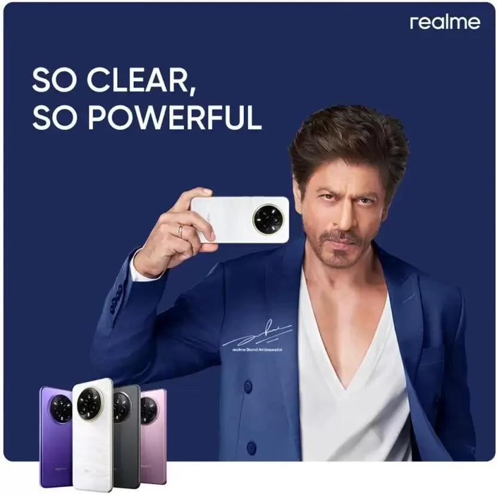
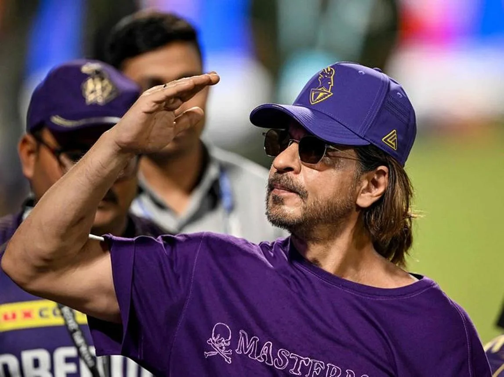
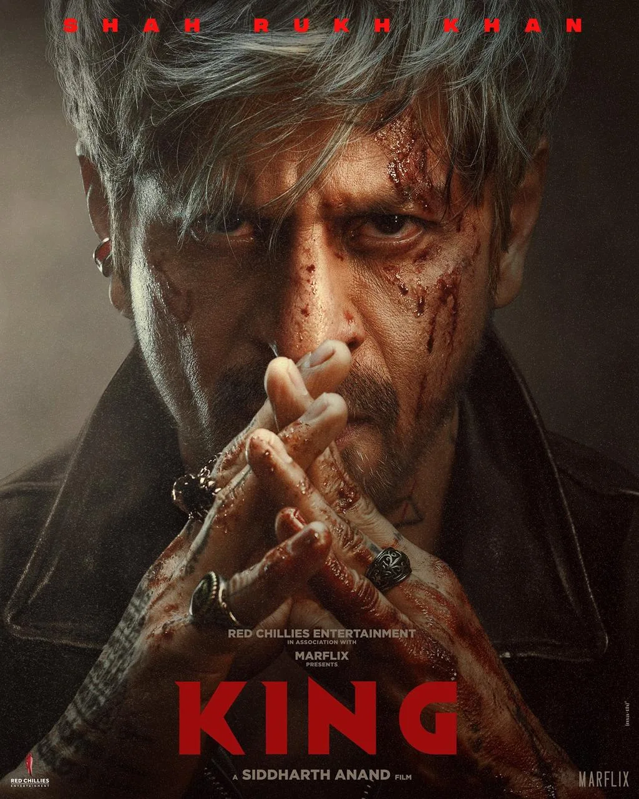
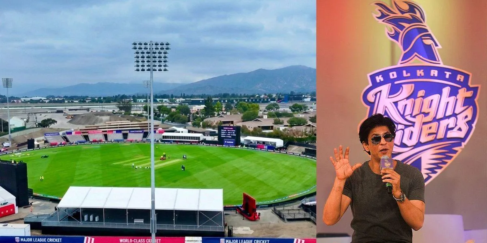

The Final Thesis · section 47 of 92
PART V — ASOKA TO BOODA
Chapter 6. ASOKA TO BOODA — Be Da Boo-Da
The King Is Not Renouncing the Kingdom. He Is Going All In.



7
Let us return to the metaphor.
ASOKA TO BOODA — Be Da Boo-Da.
It begins with the familiar historical idea of a powerful ruler who, after a defining experience, turns away from conquest and toward another way of being.
But this is where the metaphor takes a sharp, satirical turn.
This time, the King is not giving up his kingdom. He is not walking away from the throne. He is walking back into the casino. And he is taking more chips to the table.
The King is going ALL IN.
Doubling down. Tripling down. Playing across multiple tables.
The Royal Flush.
The joke is in the reversal. The historical metaphor suggests renunciation. The contemporary celebrity-business story suggests expansion.
And the contrast becomes particularly interesting when we examine the public business developments surrounding Shah Rukh Khan in 2026.
6.1 The cards on the table

CARD 01
KING — The cinematic centrepiece
The upcoming film KING is scheduled for a December 24, 2026 release, according to published reporting. It gives the story a powerful symbolic title and places the word KING at the centre of the next phase of the public narrative.

The Financial Express
+1
CARD 02
The endorsement economy
Following the 2023 comeback, reporting in January 2024 said Shah Rukh Khan had signed more than 10 brand deals since the release of Pathaan. The film, the celebrity, and the advertising market were reinforcing one another.
Bollywood Hungama

CARD 03
The wealth estimate
A September 2026 report citing the Hurun India Rich List placed Shah Rukh Khan's estimated wealth at approximately ₹10,000 crore. This is a third-party estimate of wealth, not a verified personal balance sheet, cash holding, or audited valuation of all his assets.
India Today

CARD 04
Knight Riders — From the screen to the stadium
The Knight Riders' expansion into the Los Angeles market and the proposed development of a cricket venue at Fairplex, Pomona, represent a move into sports, live experiences, and physical infrastructure.
The Financial Express
+1
CARD 05
FLAM — The interactive technology connection
September 2026 reporting on FLAM's $40 million Series B funding round identified Shah Rukh Khan among the participants. FLAM operates in interactive AI-powered content and advertising. The investment is relevant to the digital marketing thesis, although it does not establish that FLAM is being integrated into KING or a Shah Rukh Khan fan platform.
flamapp.ai
+1
These developments belong to different businesses, with different partners, ownership structures, financial arrangements, and operating objectives.
There is no evidence presented here that they are all components of a single, coordinated master plan.
But viewed together, they raise an important strategic question.
What happens when the same cultural figure has the capacity to attract audiences across cinema, advertising, sport, live entertainment, and digital technology?
The value of that figure is no longer confined to the film industry.
6.2 The Royal Flush: A metaphor for portfolio power
In poker, a Royal Flush is a particular hand. In this paper, it is a metaphor for the potential interaction of several independent sources of cultural and commercial value.
The cards are not interchangeable.
A film creates a story, characters, and a release event.
An endorsement provides a brand relationship and commercial > distribution.
A sports venture creates recurring events, teams, venues, and > communities.
A technology investment offers exposure to tools that may change how > content is created, distributed, or experienced.
A global fan base supplies attention, cultural knowledge, > creativity, and voluntary participation.
The strategic opportunity lies in whether these separate assets can reinforce one another without becoming indistinguishable.
A fan who watches a film may also follow a cricket team. A sports event may introduce a new audience to a cultural property. An interactive technology may provide new ways for fans to create and share stories.
But those are potential connections, not proof of existing integration.
The real question is whether a coherent, rights-respecting, fan-first experience can connect them.
6.3 Why the metaphor matters to digital marketing
The old marketing model is built around the campaign.
A film is announced. The campaign begins. The audience is reached. The film opens. The campaign winds down.
The Royal Flush hypothesis suggests a different model.
The film becomes one event in a broader entertainment calendar. The fan relationship persists between releases. Commercial partnerships can contribute distribution and resources. Technology can enable participation. Sports and live experiences can create recurring touchpoints.
The result could be a portfolio in which each experience contributes to the next, while remaining commercially and creatively distinct.
This is not simply about increasing the number of advertisements or the volume of content.
It is about building a system in which cultural attention can compound over time.
6.4 Be Da Boo-Da: The satire of the modern kingdom
Here is the dark humour of the chapter.
In the old story, the ruler confronts the consequences of power and renounces conquest.
In this story, the King looks at the board and discovers that there are more games to play.
Cinema. Advertising. Cricket. Stadiums. Technology. Global audiences. Fan creativity.
The empire is not being abandoned.
The empire is becoming a portfolio.
And the punchline is that the most interesting asset in the entire portfolio may not be a stadium, a film, a company, or a brand contract.
It may be the audience itself — not as property to be owned, but as a community of people who choose to participate.
That is the difference between a kingdom built around a celebrity and an ecosystem built with its fans.
The first concentrates power at the centre.
The second can create value across the network.
The Royal Flush is therefore not a prediction about Shah Rukh Khan's intentions. It is the strategic possibility that emerges when several documented business and cultural developments are placed alongside the earlier experiments in digital marketing.
The cards are visible.
The hand is not.
And that brings us to the question that should close the chapter:
What is Mr. Khan cooking?